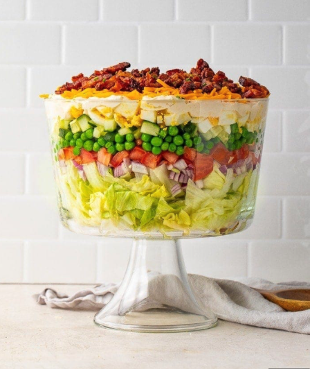

Salad Recipes

Description
This 7-layer salad looks great in a large glass bowl.
I usually make it with bacon, lettuce, red onion, pea, Cheddar cheese, and cauliflower but you can vary the type of onions, cheese, etc. There's never too much because everybody loves it!
Salad Ingredients
- For the salad: a pound of bacon, iceberg lettuce, a red onion, a package of frozen peas, shredded Cheddar cheese, and a cup of chopped cauliflower
- For the dressing: mayonnaise, grated Parmesan cheese, and white sugar
Steps on how to make Salad
- Cook the bacon.
- Assemble the salad.
- Make the dressing and drizzle over the salad.